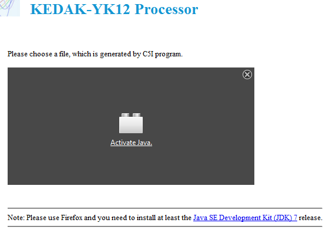
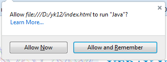
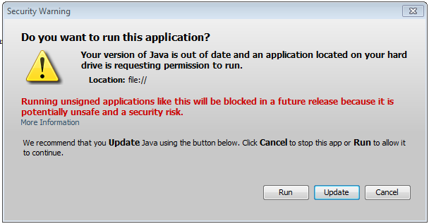

Note: Please use Firefox and you need to install at least the
Java SE Development Kit (JDK) 7 release.
Installation
- 1. Copy the yk12 to one directory in computer e.g. D:\yk12
- 2. Start the application by opening the index.hml file with Firefox
Common problems
- Activate Java Plugin.
The first time when the index.html is opened, the following screen will be displayed:

Please click on "Activate Java" to activate java plugin. The following screen will be displayed:

Click on "Allow and Remember". If the next screen appears:

Click on "Run"